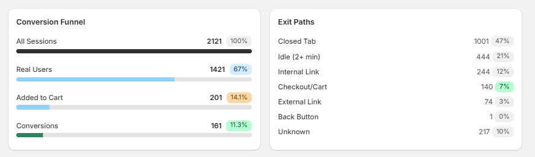
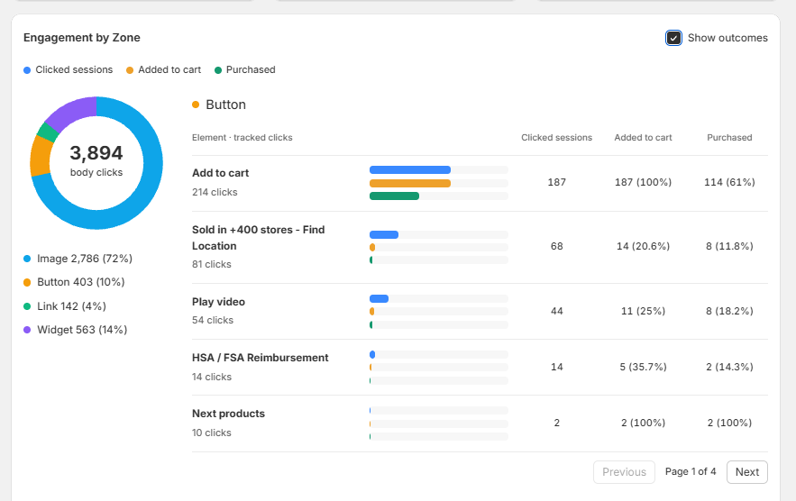
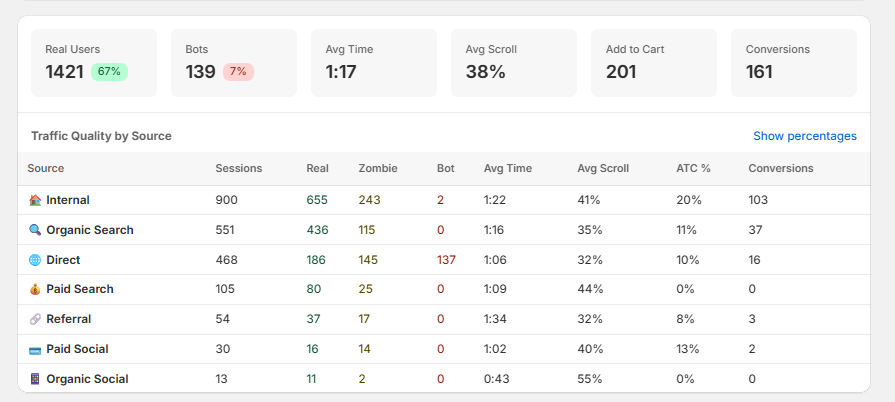
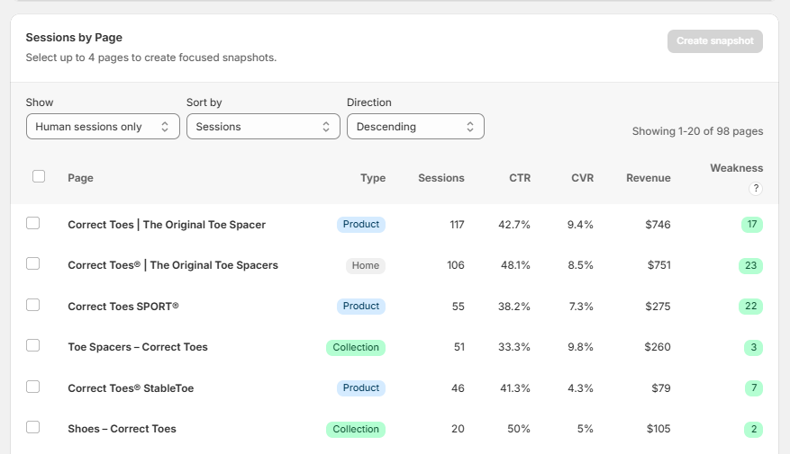

Every Insight You Need to Lift Conversions, in One Place
Snapshot CRO is our Shopify app. It tells you which page is costing you the most money, then shows you what on that page is losing people — the zones they click, the images they ignore, the step they exit from.
Free to start. Sixteen views across your whole store and every page in it.



